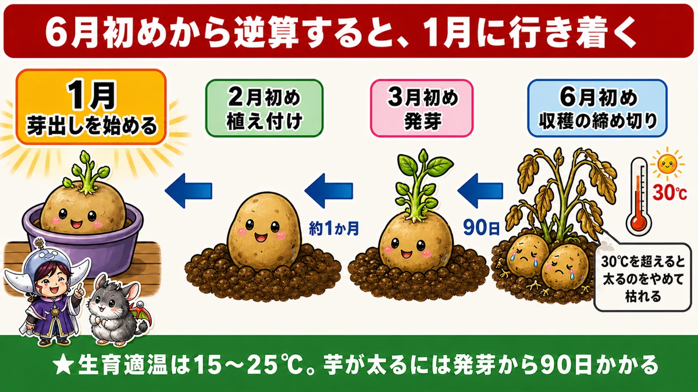
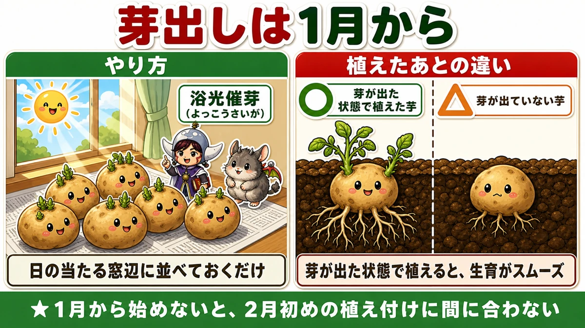
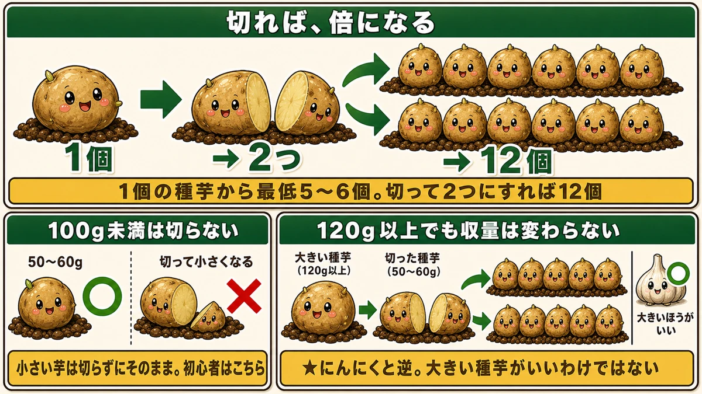
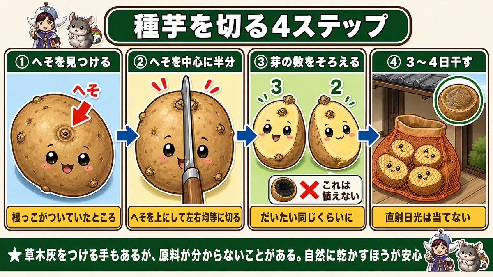
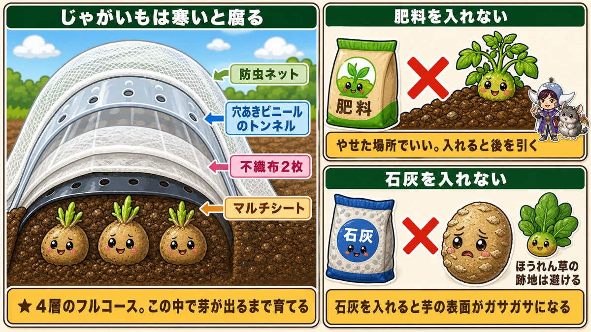
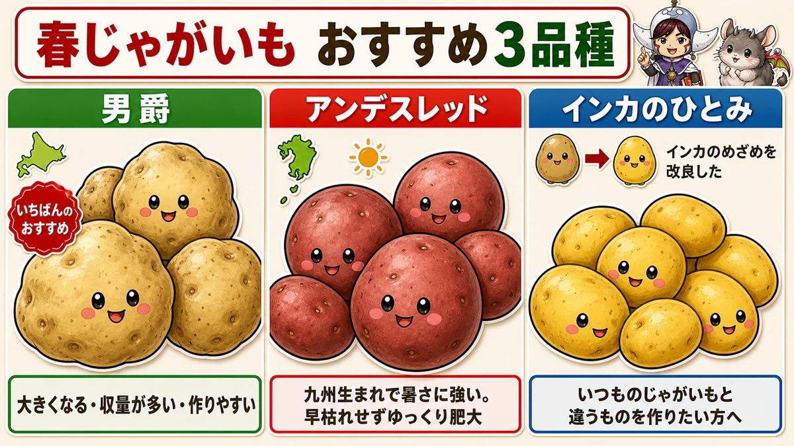
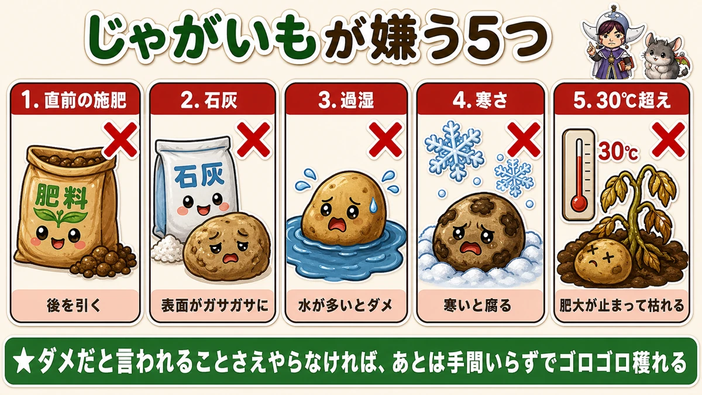

種芋1個から12倍にする切り方🥔 じゃがいもは1月から動きます

🗨️「じゃがいもって、いつ植えるんだっけ」
🗨️「種芋って高いから、たくさん買えない」
🗨️「大きい種芋のほうが、いいんでしょう？」
どうも、8150（えいこう）です🌱 家庭菜園歴8年、理科の教員免許を持っていて、有機・無農薬で野菜を育てています。
今回はじゃがいもの話です。
先に、この記事でいちばん言いたいことを2つ言っておきますね。
じゃがいもは、1月から動かないと間に合いません。
そして、種芋は切れば倍に増えます。1個から12倍も可能です。
ただし、切っていい大きさには基準があります。ここを間違えると、逆に減ります。
順番にお話ししますね☺️
📖 この記事の目次
★育てる①：締め切りは6月初め。そこから逆算します

じゃがいもは、見た目によらずデリケートな野菜です。
★生育適温は15〜25℃。寒さにも暑さにも弱い。
見た目はごつごつして無骨なのに、意外と繊細なんですよね。
なぜ6月初めが締め切りなのか
ここが出発点です。
★30℃を超えると、芋は太るのをやめます。そして枯れてきます。
問題は、その30℃がいつ来るか。
★近ごろは、5月下旬から6月初めには30℃になります。
つまり★6月初めが収穫の締め切り。ここは動かせません。
逆算していきます
- ★芋が太るには、発芽から90日かかる
- 6月初めに収穫 → ★3月初めには発芽していないと、90日が足りない
- ★発芽までに約1か月かかる → ★2月初めに植える
- ★その前に芽出しをする → ★1月から始める
★この逆算が、じゃがいも栽培でいちばん大切なことです。
「まだ寒いし、3月でいいかな」と思っていると、収穫のころに30℃が来て、太らないまま枯れます。私はこれを一度やりました。
育てる②：芽出しは、窓辺に並べるだけ

1月にやることは、これひとつです。
★芽出し（浴光催芽／よっこうさいが）といいます。難しそうな名前ですが、意味は「日に当てて芽を出させる」だけです。
やり方
★種芋を、日の当たる窓辺に並べておく。
それだけです。箱に入れたままでも、新聞紙の上に広げるだけでも構いません。
しばらくすると、芋から芽が出てきます。
★芽が出た状態で植えると、そのあとの生育がスムーズになります。
なぜ1月から始めるのか
★芽が出るまでに時間がかかるからです。
2月初めに植えたいなら、その前に芽を出させておく必要がある。だから1月。
★この作業は、この時期から始めないと間に合いません。
★★育てる③：1個から12倍にする切り方

ここからが今回の目玉です。
★種芋1個を植えると、最低でも5〜6個の芋がつきます。
では、その種芋を2つに切ったらどうなるか。
★2つそれぞれから5〜6個ずつ。合わせて12個です。
同じ1個の種芋から、倍穫れることになります。プロの農家さんは、1個から3つ4つに切ることもあるそうです。
この技が広まったきっかけ
面白い話を聞きました。
★鳥に掘り起こされた種芋を、裁断してトラクターで耕したら、その1つ1つから芋ができた。
「切っても育つのか」と分かって、カット作業をする人が増えたそうです。偶然から生まれた技なんですね。
★★ただし、100g未満は切ってはいけません
ここが大事なところです。切れば必ず得をする、というわけではありません。
★100g以上でないと、カットしてはいけない。
小さい芋を切ると、断片が小さくなりすぎて、収量が落ちます。
そしてもうひとつ、意外な事実があります。
★100〜120g以上になると、それ以上大きくても収量は変わりません。
つまり、こういうことです。
- 小さい種芋（50〜60g） … ★切らずにそのまま植える
- 大きい種芋（100g以上） … ★切って50〜60gずつにすれば、本来の収穫量と同じくらい穫れる
★「大きい種芋がいい」わけではありません
これ、にんにくと正反対なんです。
にんにくは「大きい種球を選べ」と言います。でもじゃがいもは違う。
★種芋は大きいものが最もいい、というわけではありません。
売り場で大きい芋を選んでしまいがちですが、★小さいものを植えても十分育ちます。むしろ初心者には、小さい芋をそのまま植えるほうが向いています。
★カットは切断面から腐るリスクがあるからです。失敗したくない年は、切らないという選択もありです。
育てる④：切り方には作法があります

切ると決めたら、やり方があります。
①「へそ」を見つける
まず、芋をよく見てください。
少しへこんで、ポツンとしたところがあります。これを「へそ」と呼びます。
★芋が育ったとき、根っこについていた場所です。ヘタのようなものですね。
②へそを中心に、2つに割る
★へそを上に置いて、そこを通るように半分に切ります。
これが基本の切り方です。
③芽の数が、両側でそろうように
切ったあと、両方の断面を見てください。
★芽の数が、だいたい同じくらいになっているのが理想です。
片方に3つ、もう片方に2つくらいなら問題ありません。でも★極端に偏らないように気をつけてください。
④中が黒ずんでいたら、植えない
切ったとき、中を確認してください。
★黒ずんでいるものは植えないほうがいいです。すでに傷んでいる証拠です。
★⑤3〜4日、干す
切ったまま植えてはいけません。★切り口から腐ります。
そこで乾かします。やり方はとても簡単です。
★種芋が入っていた袋に入れて、軒先など風通しのいい涼しいところに置く。
★直射日光は当てないでください。
3〜4日すると、★切り口の表面が乾いて「かさぶた」のようなものができます。
★こうなれば、そのまま植えても腐りません。
草木灰という手もありますが
時間がない場合、切り口に草木灰をつけて植える方法もあります。
ただ、有機栽培にこだわるなら、私は干すほうをおすすめします。
★安い草木灰は、原料が何なのか分からないことがあるからです。
★何もしないで、自然の力で乾かす。そのほうが安心だと思っています。たくさん植えるなら、草木灰もけっこうな量を使いますしね。
育てる⑤：うねは1月のうちに作る

芽出しと同時に、もうひとつやっておきます。
★1月のうちに、うねを作っておいてください。
★土を温めておくと、植えてからの成長がいいです。
★肥料は入れないでください
ここ、意外だと思います。
★やせた場所を選んで、肥料は入れない。
理由は2つあります。
★これから肥料を入れて肥沃にしようとすると、後を引きます。分解が間に合わず、生育の途中で悪さをする。
そして★やせた場所がなくても、肥料は入れないで植えてください。じゃがいもは、それで育ちます。
★石灰も入れません
これも大事です。
★石灰を入れると、芋の表面がガサガサになります。
じゃがいもはアルカリ性寄りの土を好むのですが、だからといって石灰を入れてはいけない。ここは矛盾するようで、しません。
そして関連して、★ほうれん草の跡地は避けてください。ほうれん草にはアルカリ寄りにするため石灰を入れているからです。
ナス科の跡地も避ける
じゃがいもはナス科です。
★トマト・なす・ピーマンを作った跡地は、避けられるなら避けてください。
★保温は「フルコース」で
じゃがいもは寒いと腐ります。だから防寒は徹底します。
- ★マルチシートを敷く
- ★不織布を2枚がけ
- ★穴あきビニールのトンネル
- ★防虫ネット
大げさに見えますが、★この中で芽が出るまで育てると、寒い時期でもスムーズにいきます。
2月初めという早い時期に植えるので、そのぶん守りを固めるということですね。
育てる⑥：品種は、この3つから

売り場には30種類ほど並ぶこともあります。迷ったら、この3つから選んでください。
①男爵 ー いちばんのおすすめ
★大きくなる、収量が多い、作りやすい。三拍子そろっています。
★北海道で開発された品種です。
迷ったらこれ、と言い切っていいと思います。いもいもしい、あの見た目そのものの味です。
②アンデスレッド ー 暑さに強い
赤い皮の芋です。
★九州で開発された品種なので、暑さに強い。
近ごろの暑さを考えると、これは大きな利点です。★早枯れせず、ゆっくり肥大できるのが魅力です。
秋植え用として知られていますが、★春植えでもよく育ち、収量も多いです。
③インカのひとみ ー 変わったものを作りたい方へ
「インカのめざめ」という品種をご存じでしょうか。★栗のように甘くて、サラダで食べると絶品です。
ただ、★収穫量が少なくて芋も小さく、作りにくい面がありました。
それを改良して登場したのが「インカのひとみ」です。
★いつも食べているじゃがいもとは違うものを作りたい方に向いています。
そのほか、シェリー（フランス生まれ）やグランドペチカ（デストロイヤーの相性で知られています）もおすすめです。場所があれば、いろいろ作ってみてください。
★じゃがいもが嫌うもの、まとめ

ここまでの話をひとつにまとめます。じゃがいもが嫌うのは、この5つです。
- ★直前の施肥（後を引く）
- ★石灰（芋の表面がガサガサになる）
- ★水が多い過湿
- ★寒さ（腐る）
- ★30℃を超える暑さ（肥大が止まって枯れる）
そして、ここが救いです。
★「ダメだと言われることさえやらなければ、あとは手間いらずでゴロゴロ穫れる」
じゃがいもは、足し算ではなく引き算の野菜なんですね。何かをしてあげるより、余計なことをしないほうがうまくいく。
学ぶ：なぜ切っても増えるのか🔬
理科の時間です。今回はここがいちばん面白いと思います。
種芋を切っても、それぞれが育つ。よく考えると不思議ではありませんか。
大根のタネを半分に切っても、芽は出ません。トマトのタネも同じです。
でもじゃがいもは切れる。なぜでしょうか。
★じゃがいもは「タネ」ではなく「茎」だからです
これが答えです。
じゃがいもは、地下の茎が太ったものです。根ではありません。茎です。
そして★茎には節があり、節ごとに芽があります。
芋の表面にある、あのくぼみ。あれが節の芽です。
★だから切り分けても、それぞれの断片に芽が残っていれば、独立した株になれる。
タネとは、成り立ちが違います
タネは1つの個体の設計図が1セット入ったものです。半分にすれば、設計図が半分になって使えません。
でも茎は、★体の一部を切り取ったものです。切り取った枝が根を出して新しい木になるのと、同じ理屈ですね。
★「1個から12倍」の正体は、じゃがいもが茎だから、ということになります。
なぜ切り口を乾かすと、かさぶたができるのか
植物も、傷口をふさぎます。
★切り口にコルク質の層を作って、水分が逃げるのと菌が入るのを防ぎます。
人間のかさぶたと、役割は同じです。
★「3〜4日干す」というのは、この層ができるのにかかる時間なんですね。
なぜ「100g未満は切るな」なのか
これも理屈があります。
切った断片は、芽が出て根を張るまで、★自分の中の養分だけで生きなければなりません。
★種芋の大きさ＝お弁当の大きさ、だと思ってください。
断片が小さいと、根が張るまでの弁当が足りない。だから育ちが悪くなる。
そして★120gを超えても収量が変わらないのは、弁当が余っても芽の数は増えないからです。大きすぎる弁当は、ただの無駄になる。
だからカットして、ちょうどいい弁当を2つ作る。これが合理的なわけですね。
お子さんと一緒なら
★種芋の「へそ」と「芽」の位置関係を見てください。
へそが根っこ側。そして芽は、その反対側に多く集まっています。
★大きい芋ほど、芽の数が多いことも数えられます。
そして切ったあと、芽の数を左右で数えてみる。「同じくらいに分ける」という作業が、そのまま観察になります🥔
まとめ
ここまで読んでくださって、ありがとうございます！
じゃがいもは、始める日で決まる野菜です。ポイントを整理しておきますね。
- ★6月初めが収穫の締め切り。逆算すると2月初めに植え、1月から芽出しを始める
- 芽出しは、日の当たる窓辺に並べるだけ。★芽が出た状態で植えると生育がスムーズ
- ★★種芋は切れば倍。1個から12倍も可能。ただし★100g未満は切らない
- ★120g以上になっても収量は変わらない。★にんにくと逆で、大きい種芋がいいわけではない
- 切り方は★へそを中心に半分、芽の数をそろえて、★3〜4日干してかさぶたを作る
- ★肥料も石灰も入れない。やせた場所でいい。ほうれん草とナス科の跡地は避ける
- 品種は男爵（万能）／アンデスレッド（暑さに強い）／インカのひとみ（変わり種）
全部やろうとしなくて大丈夫です。まずは台所のじゃがいもを1つ、窓辺に置いてみてください。芽が出たら、それが2月の準備完了の合図です🥔
次回は、夏野菜の準備の話。3月から始まる苗づくりを、失敗しない3つのコツでお話しします🌱
種芋（男爵）
春植えの王道です。大きくなって収量も多く、いちばん作りやすい。ホクホクなので、コロッケでも粉ふきいもでも合います。1kgあれば、切り分けて2〜3株ぶんになります。売っているじゃがいもではなく、必ず「種芋」を買ってください。
![[商品価格に関しましては、リンクが作成された時点と現時点で情報が変更されている場合がございます。]](https://hbb.afl.rakuten.co.jp/hgb/565b7399.7eb625e3.565b739a.e5ae706a/?me_id=1195638&item_id=10001373&pc=https%3A%2F%2Fthumbnail.image.rakuten.co.jp%2F%400_gold%2Fdomon%2Fgoldgraphic%2Ftaneimodan01.jpg%3F_ex%3D240x240&s=240x240&t=picttext "[商品価格に関しましては、リンクが作成された時点と現時点で情報が変更されている場合がございます。]")

種芋（アンデスレッド）
九州で開発された品種なので、暑さに強い。近ごろの暑さを考えると、これは大きな利点です。秋植え用として知られていますが、春植えでもよく育ち、収量も多いです。皮が赤くて中が黄色いので、掘ったときに子どもが喜びます。
![[商品価格に関しましては、リンクが作成された時点と現時点で情報が変更されている場合がございます。]](https://hbb.afl.rakuten.co.jp/hgb/56e7346a.df4ca51d.56e7346b.964fb648/?me_id=1244425&item_id=10000719&pc=https%3A%2F%2Fthumbnail.image.rakuten.co.jp%2F%400_mall%2Fmitsunobu%2Fcabinet%2Fspoteto%2Fimgrc0091205812.jpg%3F_ex%3D240x240&s=240x240&t=picttext "[商品価格に関しましては、リンクが作成された時点と現時点で情報が変更されている場合がございます。]")
穴あき黒マルチ（0.02mm×95cm）
2月の地温を上げるために張ります。穴あきなら、芽が出たときに自分でカッターを入れる手間がありません。ただし穴の間隔は15cmなので、じゃがいもの株間30cmに合わせて1つ飛ばしで使ってください。空いた穴は土をかぶせておけば大丈夫です。雑草も抑えられて、春の草取りが減ります。
![[商品価格に関しましては、リンクが作成された時点と現時点で情報が変更されている場合がございます。]](https://hbb.afl.rakuten.co.jp/hgb/56e76ac2.3cefe106.56e76ac3.fbdc1a1b/?me_id=1202225&item_id=10004912&pc=https%3A%2F%2Fthumbnail.image.rakuten.co.jp%2F%400_mall%2Fnetonya%2Fcabinet%2F01483860%2Fimg57579178.gif%3F_ex%3D240x240&s=240x240&t=picttext "[商品価格に関しましては、リンクが作成された時点と現時点で情報が変更されている場合がございます。]")
不織布
2月に植えると、まだ霜が降ります。芽が出てきたところに霜が当たると、そこで止まってしまう。うねにベタがけしておくだけで、防げます。使い回しが効くので、1本あると冬じゅう出番があります。
![[商品価格に関しましては、リンクが作成された時点と現時点で情報が変更されている場合がございます。]](https://hbb.afl.rakuten.co.jp/hgb/56bc237a.e97551b1.56bc237b.2513ed10/?me_id=1310260&item_id=10000879&pc=https%3A%2F%2Fthumbnail.image.rakuten.co.jp%2F%400_mall%2Fdiokasei%2Fcabinet%2F007fusyokufu%2F12g%2Fimgrc0092049705.jpg%3F_ex%3D240x240&s=240x240&t=picttext "[商品価格に関しましては、リンクが作成された時点と現時点で情報が変更されている場合がございます。]")
トンネル用ビニール（0.1mm×1.85m）
不織布の上に、さらにトンネルをかけると防寒のフルコースになります。2月の遅霜が心配な地域向けです。穴なしのタイプなので、晴れた日は端を開けて風を通してください。閉め切ったままだと、日中に蒸れて芽が傷みます。春が終わったら、そのまま夏野菜の雨よけにも使えます。
![[商品価格に関しましては、リンクが作成された時点と現時点で情報が変更されている場合がございます。]](https://hbb.afl.rakuten.co.jp/hgb/56bc237a.e97551b1.56bc237b.2513ed10/?me_id=1310260&item_id=10001120&pc=https%3A%2F%2Fthumbnail.image.rakuten.co.jp%2F%400_mall%2Fdiokasei%2Fcabinet%2F010maruti-bini-ru%2Fbini-ruopri%2F413190.jpg%3F_ex%3D240x240&s=240x240&t=picttext "[商品価格に関しましては、リンクが作成された時点と現時点で情報が変更されている場合がございます。]")
あわせて読みたい